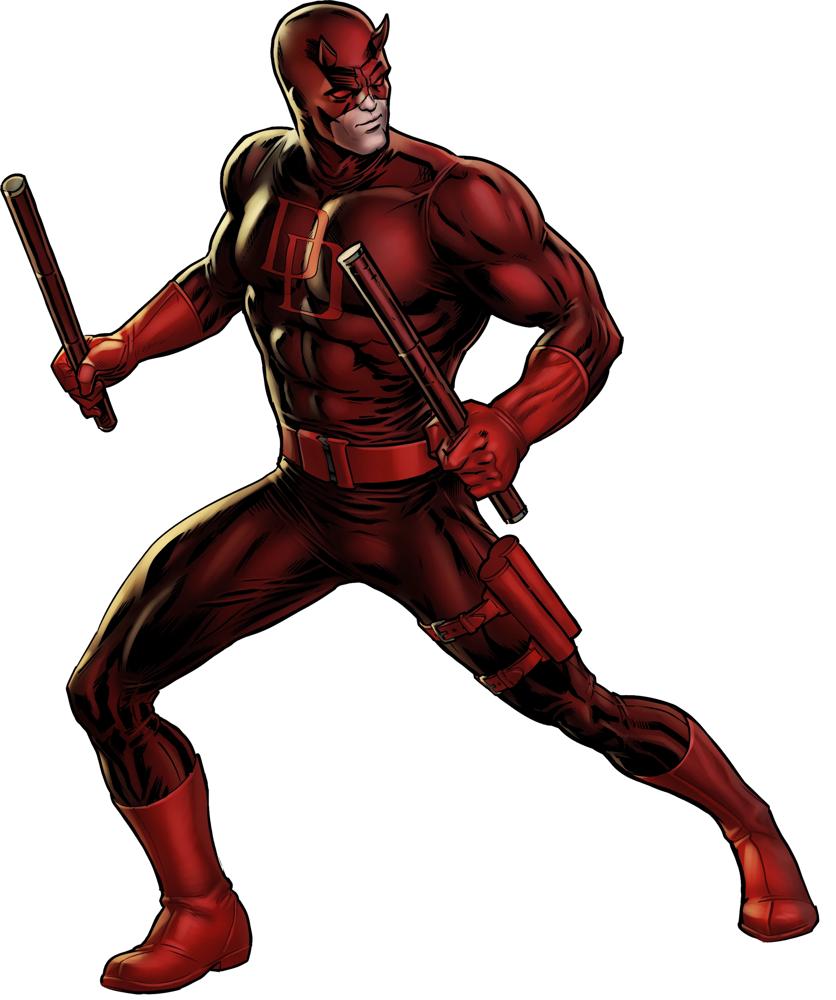

Histoire de Daredevil
Matt Murdock a perdu la vue dans un accident impliquant des produits chimiques, mais a développé des sens surhumains. Avocat le jour et justicier la nuit, il protège Hell's Kitchen sous le nom de Daredevil. Il est connu pour son sens aigu de la justice et sa détermination à défendre les innocents.
Faits intéressants
- Daredevil a été créé par Stan Lee et Bill Everett en 1964.
- Il est surnommé "L'Homme sans peur".
- Il a affronté des vilains emblématiques comme le Caïd et Bullseye.
- Il est membre des Défenseurs aux côtés de Jessica Jones, Luke Cage et Iron Fist.
Citations célèbres
- "La justice est aveugle, mais je ne le suis pas."
- "Je protège ceux qui ne peuvent pas se protéger eux-mêmes."
- "Je ne suis pas un héros. Je suis Daredevil."
- "Hell's Kitchen est ma maison, et je la défendrai."
Galerie de Daredevil
